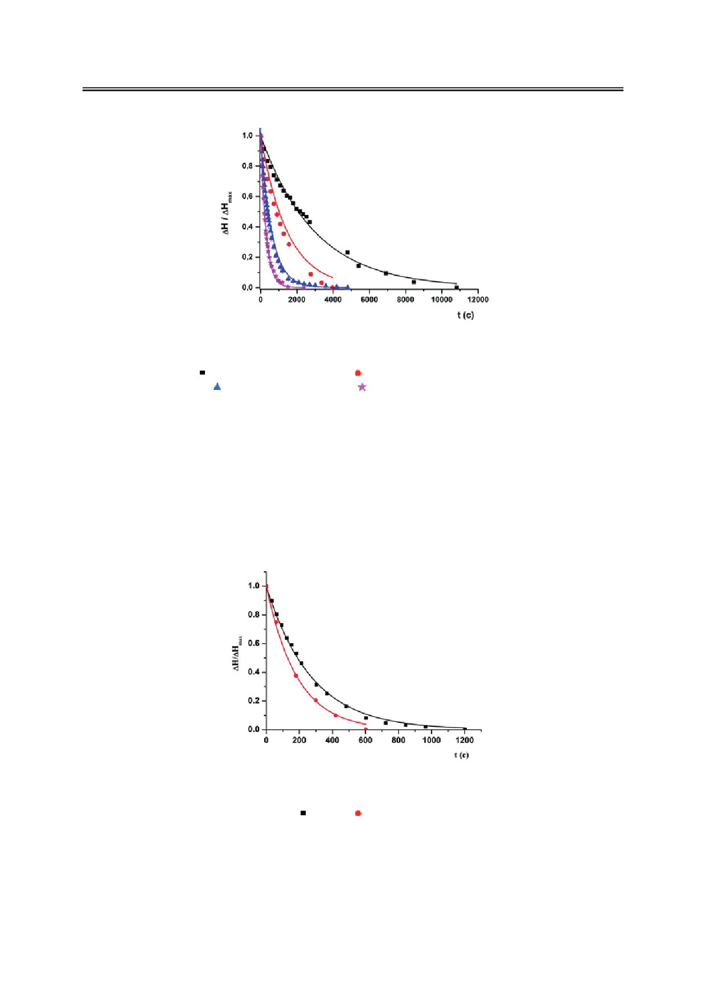

Метод затухающего потока в реологии полимерных пористых пленок, заполненных жидкими
кристаллами
Рис. 5. Временные зависимости относительных разностей уровней для ЖК-440
при различных температурах (Т), диаметрах пор (d) и открытых трубок (D), соответственно
– 26 ºC, 0.6 мкм и 3.17 мм; – 42 ºC, 0.6 мкм и 3.17 мм;
– 26 ºC, 0.4 мкм и 1 мм; – 42 ºC, 0.4 мкм и 1 мм.
Как видно из рис. 5, простой экспоненциальный закон (3) хорошо аппроксимирует
экспериментальные данные. Аналогичный вывод можно сделать относительно времен-
ных зависимостей, полученных для 5CB (4-циано-4'-пентилбифенил) (рис. 6).
Таким образом, ньютоновское поведение с постоянным значением эффективной
сдвиговой вязкости ηeff имеет место также и для потоков НЖК. В свою очередь, это оз-
начает, что затухающий поток был достаточно слабым и не нарушал первоначальную
ориентационную структуру жидкого кристалла, образованную внутри поры при взаи-
модействии жидкого кристалла с внутренней поверхностью цилиндрических полостей.
Рис. 6. Временные зависимости разностей относительных уровней для 5CB: диаметр
пор d = 2 мкм, диаметр открытых трубок D = 3.17 мм, температура (Т):
– 26 ºC; – 41 ºC.
Экспериментальные зависимости ΔH (t) и данные о KcN, полученные из эксперимен-
тов с этанолом и представленные в таблице, могут быть использованы для расчета значе-
ний ηeff. Результаты выполненных расчетов для различных температур приведены на рис.
7 и 8 для ЖК-440 и 5СВ, соответственно. Данные результаты можно сравнить с темпе-
32
Российский технологический журнал 2017 Том 5 № 5